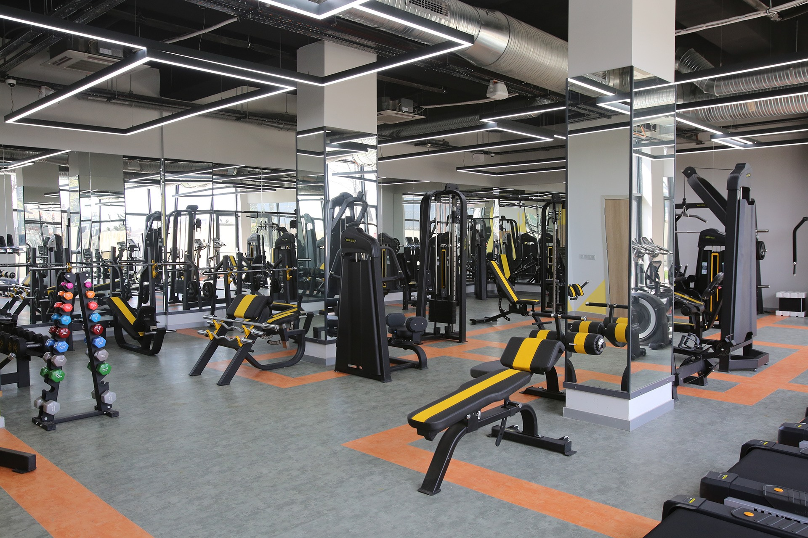

▶ Spor Salonu & Reformer Pilates
GELECEĞİNSPORCULARIBURADAN ÇIKIYOR
Halkali Gençlik Merkezi Spor Salonu; Fitness ve Reformer Pilates dallarında 550 kişilik kapasitesiyle, 6 uzman personel eşliğinde hizmet vermektedir. Kardiyovasküler dayanıklılıktan güç antrenmanlarına kadar her şey tek çatı altında.
550Kişilik Kapasite

